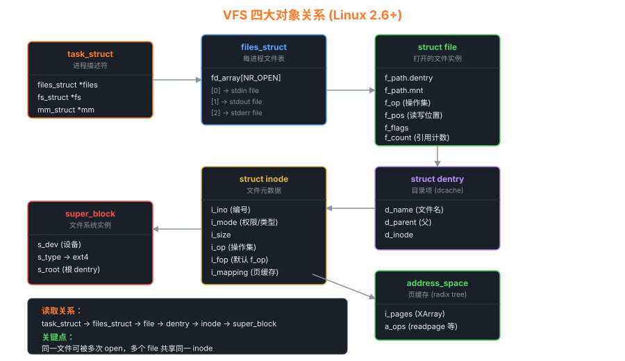

05文件系统 — VFS、ext4、page cache、io_uring
"一切皆文件"是 Unix 的核心哲学。本章揭示这一哲学如何在内核中通过 VFS 抽象实现。
5.1 VFS 四大对象

task_struct → files_struct → file → dentry → inode → super_block
四大对象的职责
| 对象 | 表示什么 | 每个有几个 |
|---|---|---|
super_block | 已挂载的文件系统实例 | 每挂载点一个 |
inode | 文件元数据（权限、大小、所属 fs） | 每文件一个 |
dentry | 路径中的一个名字（"目录项"） | 每路径组件一个 |
file | 一次"打开"的实例（含读写位置） | 每次 open() 一个 |
5.2 一次 open("/etc/passwd") 的完整追踪
/* fs/open.c */ SYSCALL_DEFINE3(open, const char __user *, filename, int, flags, mode_t, mode) { return do_sys_open(AT_FDCWD, filename, flags, mode); } long do_sys_open(...) { // 1. 找一个空闲 fd int fd = get_unused_fd_flags(flags); // 2. 实际打开 → 路径解析 → 构造 struct file struct file *f = do_filp_open(dfd, &tmp, &op); // 3. fd ↔ file 绑定 fd_install(fd, f); return fd; } struct file *do_filp_open(...) { struct nameidata nd; // 关键: path_openat 一层层解析 "/etc/passwd" // → "/" lookup → "etc" lookup → "passwd" lookup return path_openat(&nd, op, flags); }
路径解析 (path_lookupat) 深入
/* fs/namei.c */ static int link_path_walk(const char *name, struct nameidata *nd) { for (;;) { // 1. 先查 dcache（高速缓存） struct dentry *dentry = __d_lookup(parent, &this); if (!dentry) { // 2. dcache 未命中 → 调用具体 fs 的 lookup dentry = lookup_slow(&this, parent, flags); // 比如 ext4_lookup → ext4_find_entry → 读目录块 } if (last_component) break; } }
5.3 Page Cache — 文件读写的"防火墙"
关键数据结构: address_space
struct address_space { struct inode *host; // 关联的 inode struct xarray i_pages; // 所有缓存页（XArray 树） const struct address_space_operations *a_ops; unsigned long nrpages; // 已缓存的页数 }; struct address_space_operations { int (*writepage)(struct page *page, struct writeback_control *); int (*readpage)(struct file *, struct page *); int (*write_begin)(...); int (*write_end)(...); /* ... */ };
5.4 脏页回写
用户 write() 只是把数据写进 page cache，页变"脏"但不立刻落盘。回写有三种触发：
- 定时：
dirty_writeback_centisecs（默认 500，即 5 秒），后台flush线程触发 - 过期：脏页停留
dirty_expire_centisecs（默认 3000，即 30 秒）后必写 - 阈值：脏页超过
dirty_ratio（默认 20%），申请方被阻塞直到回写完成
# 查看与调整 sysctl vm.dirty_ratio # 阻塞阈值 (%) sysctl vm.dirty_background_ratio # 后台回写阈值 (%) sysctl vm.dirty_expire_centisecs # 脏页存活上限 # 强制立刻回写 sync # 全部 fsync(fd) # 单个文件 (用户态调用)
5.5 ext4 关键特性
| 特性 | 说明 |
|---|---|
| Extent | 取代 ext3 间接块，用 [start, len] 描述连续块，大文件效率高 |
| HTree 目录 | 大目录用哈希树代替线性扫描，O(log n) 查找 |
| 日志 (jbd2) | data=writeback / ordered / journal 三种级别 |
| 延迟分配 | write() 不立即分配块，回写时一次分配大段连续块 |
| 多块分配 | 一次系统调用分配多个块 |
| Inline data | <60B 的小文件直接存在 inode 里 |
5.6 io_uring — 现代异步 IO
传统 aio 早已被废弃。io_uring 是 Linux 5.1 引入的新一代异步 IO 框架，性能远超 epoll：
/* 用户态使用 (liburing 简化) */ struct io_uring ring; io_uring_queue_init(256, &ring, 0); struct io_uring_sqe *sqe = io_uring_get_sqe(&ring); io_uring_prep_read(sqe, fd, buf, sz, 0); io_uring_submit(&ring); struct io_uring_cqe *cqe; io_uring_wait_cqe(&ring, &cqe); // cqe->res 是 read 的返回值 io_uring_cqe_seen(&ring, cqe);
io_uring 为什么快
- 共享内存环形队列：用户和内核共享 SQ/CQ 两个 ring，无需系统调用提交任务
- 批量提交：一次系统调用提交多个任务
- SQPOLL 模式：内核线程主动 poll，用户完全无系统调用
- 链式 IO：read → write 之类组合一次提交